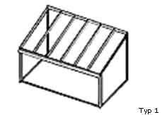
Pultová zimní zahrada rovná
Jednoduchý a velmi oblíbený typ zimní zahrady vhodný k domu i na terasu. Rovná pultová střecha působí čistě, moderně a hodí se pro menší i střední zimní zahrady.
Prohlédněte si základní typy zimních zahrad a vyberte řešení, které nejlépe naváže na váš dům, terasu nebo přístavbu. Každý typ zimní zahrady umíme upravit na míru podle prostoru i stylu stavby.
Kompletaci zimní zahrady na stávající terase ani stavbu svépomocí nedoporučujeme. Pro správnou dlouhodobou funkci je potřeba řešit základy, odizolovanou podlahovou desku a napojení na objekt jako plnohodnotnou stavbu.
Níže najdete přehled konstrukcí s praktickým popisem. Díky tomu snadno zjistíte, jaký typ zimní zahrady je vhodný pro váš dům i terasu.

Jednoduchý a velmi oblíbený typ zimní zahrady vhodný k domu i na terasu. Rovná pultová střecha působí čistě, moderně a hodí se pro menší i střední zimní zahrady.
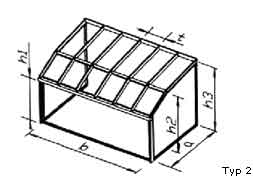
Tento typ zimní zahrady nabízí více vnitřního prostoru a příjemnější světlou výšku. Vhodné řešení pro zimní zahradu u domu, kde je důležitý komfort i dostatek světla.
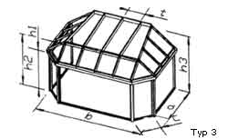
Elegantní zimní zahrada se zkosenými boky, která působí reprezentativně a opticky zvětšuje prostor. Dobře se hodí tam, kde chcete spojit design a praktické využití.
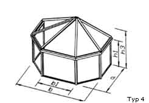
Tradičně působící typ zimní zahrady se střešním vrcholem uprostřed. Vhodný pro přístavby, kde má zimní zahrada navazovat na klasický styl domu.
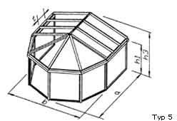
Tvarově zajímavá zimní zahrada, která kombinuje více sklonů střechy a nabízí vzdušný interiér. Hodí se pro zákazníky, kteří chtějí výraznější architektonické řešení.
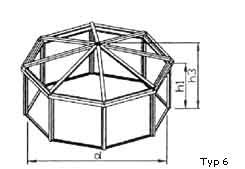
Symetrický typ zimní zahrady s reprezentativním vzhledem, vhodný například jako zahradní pavilon nebo dominantní obytný prostor.
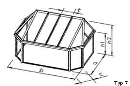
Praktická varianta pro delší stěny domu nebo širší terasy. Nabízí více užitné plochy a současně si zachovává elegantní členění čelní části.
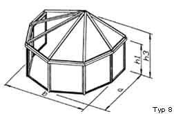
Vzdušná a architektonicky výrazná zimní zahrada vhodná pro náročnější realizace. Jehlanová střecha zajišťuje atraktivní vzhled a dobře funguje u reprezentativních staveb.
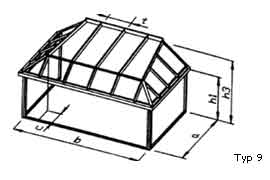
Dobré řešení pro zákazníky, kteří chtějí klasický půdorys, ale jemnější vzhled čelní části. Tento typ zimní zahrady spojuje praktičnost obdélníku s elegantnějším tvarem.
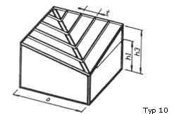
Kompaktní zimní zahrada vhodná pro menší přístavby i samostatné využití. Díky střeše do středu působí vyváženě a hodí se tam, kde chcete jednoduchý, ale efektní tvar.
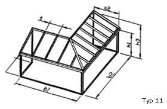
Praktický typ zimní zahrady pro rohové napojení na dům nebo členitější dispozice. Umožňuje dobře využít prostor a často se hodí tam, kde je potřeba individuální návrh na míru.
Mezi nejžádanější patří typy 1 a 2, často ve venkovním rozměru přibližně 4 × 4 m. Každé řešení ale přizpůsobujeme konkrétní stavbě.